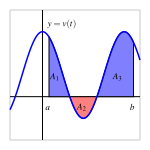
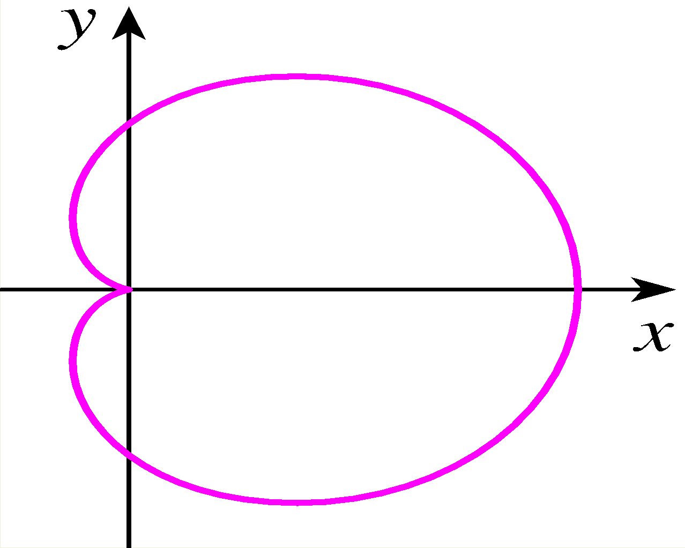

How can we find the exact value of a definite integral without taking the limit of a Riemann sum?
What is the statement of the Fundamental Theorem of Calculus, and how do antiderivatives of functions play a key role in applying the theorem?
What is the meaning of the definite integral of a rate of change in contexts other than when the rate of change represents velocity?
Much of our work in Chapter 4 has been motivated by the velocity-distance problem: if we know the instantaneous velocity function, \(v(t)\text{,}\) for a moving object on a given time interval \([a,b]\text{,}\) can we determine the distance it traveled on \([a,b]\text{?}\) If the velocity function is nonnegative on \([a,b]\text{,}\) the area bounded by \(y = v(t)\) and the \(t\)-axis on \([a,b]\) is equal to the distance traveled. This area is also the value of the definite integral \(\int_a^b v(t) \, dt\text{.}\) If the velocity is sometimes negative, the total area bounded by the velocity function still tells us distance traveled, while the net signed area tells us the object’s change in position.
For instance, for the velocity function in Figure 4.4.1, the total distance \(D\) traveled by the moving object on \([a,b]\) is
\begin{equation*}
D = A_1 + A_2 + A_3\text{,}
\end{equation*}
The areas \(A_1\text{,}\)\(A_2\text{,}\) and \(A_3\) are each given by definite integrals, which may be computed by limits of Riemann sums (and in special circumstances by geometric formulas).

Figure4.4.1.A velocity function that is sometimes negative.
We turn our attention to an alternate approach.
Preview Activity4.4.1.
A student with a third floor dormitory window 32 feet off the ground tosses a water balloon straight up in the air with an initial velocity of 16 feet per second. It turns out that the instantaneous velocity of the water balloon is given by \(v(t) = -32t + 16\text{,}\) where \(v\) is measured in feet per second and \(t\) is measured in seconds.
Let \(s(t)\) represent the height of the water balloon above ground at time \(t\text{,}\) and note that \(s\) is an antiderivative of \(v\text{.}\) That is, \(v\) is the derivative of \(s\text{:}\)\(s'(t) = v(t)\text{.}\) Find a formula for \(s(t)\) that satisfies the initial condition that the balloon is tossed from 32 feet above ground. In other words, make your formula for \(s\) satisfy \(s(0) = 32\text{.}\)
When does the water balloon reach its maximum height? When does it land?
Compute \(s(\frac{1}{2}) - s(0)\text{,}\)\(s(2) - s(\frac{1}{2})\text{,}\) and \(s(2) - s(0)\text{.}\) What do these represent?
What is the total vertical distance traveled by the water balloon from the time it is tossed until the time it lands?
Sketch a graph of the velocity function \(y = v(t)\) on the time interval \([0,2]\text{.}\) What is the total net signed area bounded by \(y = v(t)\) and the \(t\)-axis on \([0,2]\text{?}\) Answer this question in two ways: first by using your work above, and then by using a familiar geometric formula to compute areas of certain relevant regions.
Subsection4.4.1The Fundamental Theorem of Calculus
Suppose we know the position function \(s(t)\) and the velocity function \(v(t)\) of an object moving in a straight line, and for the moment let us assume that \(v(t)\) is positive on \([a,b]\text{.}\) Then, as shown in Figure 4.4.2, we know two different ways to compute the distance, \(D\text{,}\) the object travels: one is that \(D = s(b) - s(a)\text{,}\) the object’s change in position. The other is the area under the velocity curve, which is given by the definite integral, so \(D = \int_a^b v(t) \, dt\text{.}\)
Figure4.4.2.Finding distance traveled when we know a velocity function \(v\text{.}\)
Since both of these expressions tell us the distance traveled, it follows that they are equal, so
Equation (4.4.1) holds even when velocity is sometimes negative, because \(s(b) - s(a)\text{,}\)the object’s change in position, is also measured by the net signed area on \([a,b]\) which is given by \(\int_a^b v(t) \, dt\text{.}\)
Perhaps the most powerful fact Equation (4.4.1) reveals is that we can compute the integral’s value if we can find a formula for \(s\text{.}\) Remember, \(s\) and \(v\) are related by the fact that \(v\) is the derivative of \(s\text{,}\) or equivalently that \(s\) is an antiderivative of \(v\text{.}\)
Example4.4.3.
Determine the exact distance traveled on \([1,5]\) by an object with velocity function \(v(t) = 3t^2 + 40\) feet per second. The distance traveled on the interval \([1,5]\) is given by
where \(s\) is an antiderivative of \(v\text{.}\) Now, the derivative of \(t^3\) is \(3t^2\) and the derivative of \(40t\) is \(40\text{,}\) so it follows that \(s(t) = t^3 + 40t\) is an antiderivative of \(v\text{.}\) Therefore,
Note the key lesson of Example 4.4.3: to find the distance traveled, we need to compute the area under a curve, which is given by the definite integral. But to evaluate the integral, we can find an antiderivative, \(s\text{,}\) of the velocity function, and then compute the total change in \(s\) on the interval. In particular, we can evaluate the integral without computing the limit of a Riemann sum.
Figure4.4.4.The exact area of the region enclosed by \(v(t) = 3t^2 + 40\) on \([1,5]\text{.}\)
It will be convenient to have a shorthand symbol for a function’s antiderivative. For a continuous function \(f\text{,}\) we will often denote an antiderivative of \(f\) by \(F\text{,}\) so that \(F'(x) = f(x)\) for all relevant \(x\text{.}\) Using the notation \(V\) in place of \(s\) (so that \(V\) is an antiderivative of \(v\)) in Equation (4.4.1), we can write
Now, to evaluate the definite integral \(\int_a^b f(x) \, dx\) for an arbitrary continuous function \(f\text{,}\) we could certainly think of \(f\) as representing the velocity of some moving object, and \(x\) as the variable that represents time. But Equations (4.4.1) and (4.4.2) hold for any continuous velocity function, even when \(v\) is sometimes negative. So Equation (4.4.2) offers a shortcut route to evaluating any definite integral, provided that we can find an antiderivative of the integrand. The Fundamental Theorem of Calculus (FTC) summarizes these observations.
Fundamental Theorem of Calculus.
If \(f\) is a continuous function on \([a,b]\text{,}\) and \(F\) is any antiderivative of \(f\text{,}\) then \(\int_a^b f(x) \, dx = F(b) - F(a)\text{.}\)
A common alternate notation for \(F(b) - F(a)\) is
The FTC opens the door to evaluating a wide range of integrals if we can find an antiderivative \(F\) for the integrand \(f\text{.}\) For instance since \(\frac{d}{dx}[\frac{1}{3}x^3] = x^2\text{,}\) the FTC tells us that
But finding an antiderivative can be far from simple; it is often difficult or even impossible. While we can differentiate just about any function, even some relatively simple functions don’t have an elementary antiderivative. A significant portion of integral calculus (which is the main focus of second semester college calculus) is devoted to the problem of finding antiderivatives.
Activity4.4.2.
Use the Fundamental Theorem of Calculus to evaluate each of the following integrals exactly. For each, sketch a graph of the integrand on the relevant interval and write one sentence that explains the meaning of the value of the integral in terms of the (net signed) area bounded by the curve.
The general problem of finding an antiderivative is difficult. In part, this is due to the fact that we are trying to undo the process of differentiating, and the undoing is much more difficult than the doing. For example, while it is evident that an antiderivative of \(f(x) = \sin(x)\) is \(F(x) = -\cos(x)\) and that an antiderivative of \(g(x) = x^2\) is \(G(x) = \frac{1}{3} x^3\text{,}\) combinations of \(f\) and \(g\) can be far more complicated. Consider the functions
What is involved in trying to find an antiderivative for each? From our experience with derivative rules, we know that derivatives of sums and constant multiples of basic functions are simple to execute, but derivatives involving products, quotients, and composites of familiar functions are more complicated. Therefore, it stands to reason that antidifferentiating products, quotients, and composites of basic functions may be even more challenging. We defer our study of all but the most elementary antiderivatives to later in the text.
We do note that whenever we know the derivative of a function, we have a function-derivative pair, so we also know the antiderivative of a function. For instance, since we know that
we also know that \(F(x) = -\cos(x)\) is an antiderivative of \(f(x) = \sin(x)\text{.}\)\(F\) and \(f\) together form a function-derivative pair. Clearly, every basic derivative rule leads us to such a pair, and thus to a known antiderivative.
In Activity 4.4.3, we will construct a list of the basic antiderivatives we know at this time. Those rules will help us antidifferentiate sums and constant multiples of basic functions. For example, since \(-\cos(x)\) is an antiderivative of \(\sin(x)\) and \(\frac{1}{3}x^3\) is an antiderivative of \(x^2\text{,}\) it follows that
is an antiderivative of \(f(x) = 5\sin(x) - 4x^2\text{,}\) by the sum and constant multiple rules for differentiation.
Finally, before proceeding to build a list of common functions whose antiderivatives we know, we recall that each function has more than one antiderivative. Because the derivative of any constant is zero, we may add a constant of our choice to any antiderivative. For instance, we know that \(G(x) = \frac{1}{3}x^3\) is an antiderivative of \(g(x) = x^2\text{.}\) But we could also have chosen \(G(x) = \frac{1}{3}x^3 + 7\text{,}\) since in this case as well, \(G'(x) = x^2\text{.}\) If \(g(x) = x^2\text{,}\) we say that the general antiderivative of \(g\) is
where \(C\) represents an arbitrary real number constant. Regardless of the formula for \(g\text{,}\) including \(+C\) in the formula for its antiderivative \(G\) results in the most general possible antiderivative.
Our current interest in antiderivatives is so that we can evaluate definite integrals by the Fundamental Theorem of Calculus. For that task, the constant \(C\) is irrelevant, and we usually omit it. To see why, consider the definite integral
For the integrand \(g(x) = x^2\text{,}\) suppose we find and use the general antiderivative \(G(x) = \frac{1}{3} x^3 + C\text{.}\) Then, by the FTC,
\begin{align*}
\int_0^1 x^2 \, dx &= \left. \frac{1}{3} x^3 + C \right|_0^1\\
&= \left(\frac{1}{3} (1)^3 + C \right) - \left(\frac{1}{3} (0)^3 + C \right)\\
&= \frac{1}{3} + C - 0 - C\\
&= \frac{1}{3}\text{.}
\end{align*}
Observe that the \(C\)-values appear as opposites in the evaluation of the integral and thus do not affect the definite integral’s value.
In the following activity, we work to build a list of basic functions whose antiderivatives we already know.
Activity4.4.3.
Use your knowledge of derivatives of basic functions to complete Table 4.4.5 of antiderivatives. For each entry, your task is to find a function \(F\) whose derivative is the given function \(f\text{.}\) When finished, use the FTC and the results in the table to evaluate the three given definite integrals.
Table4.4.5.Familiar basic functions and their antiderivatives.
Let us review three interpretations of the definite integral.
For a moving object with instantaneous velocity \(v(t)\text{,}\) the object’s change in position on the time interval \([a,b]\) is given by \(\int_a^b v(t) \, dt\text{,}\) and whenever \(v(t) \ge 0\) on \([a,b]\text{,}\)\(\int_a^b v(t) \, dt\) tells us the total distance traveled by the object on \([a,b]\text{.}\)
For any continuous function \(f\text{,}\) its definite integral \(\int_a^b f(x) \, dx\) represents the net signed area bounded by \(y = f(x)\) and the \(x\)-axis on \([a,b]\text{,}\) where regions that lie below the \(x\)-axis have a minus sign associated with their area.
The value of a definite integral is linked to the average value of a function: for a continuous function \(f\) on \([a,b]\text{,}\) its average value \(f_{\operatorname{AVG} [a,b]}\) is given by
The Fundamental Theorem of Calculus now enables us to evaluate exactly (without taking a limit of Riemann sums) any definite integral for which we are able to find an antiderivative of the integrand.
A slight change in perspective allows us to gain even more insight into the meaning of the definite integral. Recall Equation (4.4.2), where we wrote the Fundamental Theorem of Calculus for a velocity function \(v\) with antiderivative \(V\) as
If we instead replace \(V\) with \(s\) (which represents position) and replace \(v\) with \(s'\) (since velocity is the derivative of position), Equation (4.4.2) then reads as
In words, this version of the FTC tells us that the total change in an object’s position function on a particular interval is given by the definite integral of the position function’s derivative over that interval.
Of course, this result is not limited to only the setting of position and velocity. Writing the result in terms of a more general function \(f\text{,}\) we have the Total Change Theorem.
Total Change Theorem.
If \(f\) is a continuously differentiable function on \([a,b]\) with derivative \(f'\text{,}\) then \(f(b) - f(a) = \int_a^b f'(x) \, dx\text{.}\) That is, the definite integral of the rate of change of a function on \([a,b]\) is the total change of the function itself on \([a,b]\text{.}\)
The Total Change Theorem tells us more about the relationship between the graph of a function and that of its derivative. Recall that heights on the graph of the derivative function are equal to slopes on the graph of the function itself. If instead we know \(f'\) and are seeking information about \(f\text{,}\) we can say the following:
differences in heights on \(f\) correspond to net signed areas bounded by \(f'\text{.}\)
Figure4.4.6.The graphs of \(f'(x) = 4 - 2x\) (at left) and an antiderivative \(f(x) = 4x - x^2\) at right. Differences in heights on \(f\) correspond to net signed areas bounded by \(f'\text{.}\)
To see why this is so, consider the difference \(f(1) - f(0)\text{.}\) This value is 3, because \(f(1) = 3\) and \(f(0) = 0\text{,}\) but also because the net signed area bounded by \(y = f'(x)\) on \([0,1]\) is 3. That is,
In addition to this observation about area, the Total Change Theorem enables us to answer questions about a function whose rate of change we know.
Example4.4.7.
Suppose that pollutants are leaking out of an underground storage tank at a rate of \(r(t)\) gallons/day, where \(t\) is measured in days. It is conjectured that \(r(t)\) is given by the formula \(r(t) = 0.0069t^3 -0.125t^2+11.079\) over a certain 12-day period. The graph of \(y=r(t)\) is given in Figure 4.4.8. What is the meaning of \(\int_4^{10} r(t) \, dt\) and what is its value? What is the average rate at which pollutants are leaving the tank on the time interval \(4 \le t \le 10\text{?}\)
Figure4.4.8.The rate \(r(t)\) of pollution leaking from a tank, measured in gallons per day.
Solution.
Since \(r(t) \ge 0\text{,}\) the value of \(\int_4^{10} r(t) \, dt\) is the area under the curve on the interval \([4,10]\text{.}\) A Riemann sum for this area will have rectangles with heights measured in gallons per day and widths measured in days, so the area of each rectangle will have units of
Thus, the definite integral tells us the total number of gallons of pollutant that leak from the tank from day 4 to day 10. The Total Change Theorem tells us the same thing: if we let \(R(t)\) denote the total number of gallons of pollutant that have leaked from the tank up to day \(t\text{,}\) then \(R'(t) = r(t)\text{,}\) and
the number of gallons that have leaked from day 4 to day 10.
To compute the exact value of the integral, we use the Fundamental Theorem of Calculus. Antidifferentiating \(r(t) = 0.0069t^3 -0.125t^2+11.079\text{,}\) we find that
Thus, approximately 44.282 gallons of pollutant leaked over the six day time period.
To find the average rate at which pollutant leaked from the tank over \(4 \le t \le 10\text{,}\) we compute the average value of \(r\) on \([4,10]\text{.}\) Thus,
During a 40-minute workout, a person riding an exercise machine burns calories at a rate of \(c\) calories per minute, where the function \(y = c(t)\) is given in Figure 4.4.9. On the interval \(0 \le t \le 10\text{,}\) the formula for \(c\) is \(c(t) = -0.05t^2 + t + 10\text{,}\) while on \(30 \le t \le 40\text{,}\) its formula is \(c(t) = -0.05t^2 + 3t - 30\text{.}\)
Figure4.4.9.The rate \(c(t)\) at which a person exercising burns calories, measured in calories per minute.
What is the exact total number of calories the person burns during the first 10 minutes of her workout?
Let \(C(t)\) be an antiderivative of \(c(t)\text{.}\) What is the meaning of \(C(40) - C(0)\) in the context of the person exercising? Include units on your answer.
Determine the exact average rate at which the person burned calories during the 40-minute workout.
At what time(s), if any, is the instantaneous rate at which the person is burning calories equal to the average rate at which she burns calories, on the time interval \(0 \le t \le 40\text{?}\)
Subsection4.4.4Summary
We can find the exact value of a definite integral without taking the limit of a Riemann sum or using a familiar area formula by finding the antiderivative of the integrand, and hence applying the Fundamental Theorem of Calculus.
The Fundamental Theorem of Calculus says that if \(f\) is a continuous function on \([a,b]\) and \(F\) is an antiderivative of \(f\text{,}\) then
Hence, if we can find an antiderivative for the integrand \(f\text{,}\) evaluating the definite integral comes from simply computing the change in \(F\) on \([a,b]\text{.}\)
A slightly different perspective on the FTC allows us to restate it as the Total Change Theorem, which says that
for any continuously differentiable function \(f\text{.}\) This means that the definite integral of the instantaneous rate of change of a function \(f\) on an interval \([a,b]\) is equal to the total change in the function \(f\) on \([a,b]\text{.}\)
Exercises4.4.5Exercises
1.Finding exact displacement.
Let \((x_0, y_0) = (1, 5)\) and \((x_1, y_1) = (1.1, 5.4)\text{.}\) Use the following graph of the function \(f\) to find the indicated derivatives.

If \(h(x)=(f(x))^{2}\text{,}\) then
\(h'(1) =\)
If \(g(x)=f^{-1}(x)\text{,}\) then
\(g'(5) =\)
2.Evaluating the definite integral of a rational function.
Find the derivative of the function \(f(t)\text{,}\) below.
\(f(t)=\ln(t^{4}+3)\)
\(f'(t) =\)
3.Evaluating the definite integral of a linear function.
NOTE: The webwork system will accept \(\arcsin(x)\) or \(\sin^{-1}(x)\) as the inverse of \(\sin (x)\text{.}\)
4.Evaluating the definite integral of a quadratic function.
If \(f(x) = 6 x^{3}\arctan(6 x^{4})\text{,}\) find \(f' ( x ).\)
\(f' (x)\) =
5.Simplifying an integrand before integrating.
For each of the given functions \(f(x)\text{,}\) find the derivative \(\left(f^{-1}\right)'(c)\) at the given point \(c\text{,}\) first finding \(a=f^{-1}(c)\text{.}\)
a) \(f(x)= 5 x + 7 x^{21}\text{;}\)\(c = -12\)
\(a\) =
\(\left(f^{-1}\right)'(c)\) =
b) \(f(x)= x^2 - 12 x + 51\) on the interval \([6,\infty)\text{;}\)\(c = 16\)
\(a\) =
\(\left(f^{-1}\right)'(c)\) =
6.Evaluating the definite integral of a trigonometric function.
Given that \(f(x)=2x+\cos(x)\) is one-to-one, use the formula
The instantaneous velocity (in meters per minute) of a moving object is given by the function \(v\) as pictured in Figure 4.4.10. Assume that on the interval \(0 \le t \le 4\text{,}\)\(v(t)\) is given by \(v(t) = -\frac{1}{4}t^3 + \frac{3}{2}t^2 + 1\text{,}\) and that on every other interval \(v\) is piecewise linear, as shown.
Figure4.4.10.The velocity function of a moving body.
Determine the exact distance traveled by the object on the time interval \(0 \le t \le 4\text{.}\)
What is the object’s average velocity on \([12,24]\text{?}\)
At what time is the object’s acceleration greatest?
Suppose that the velocity of the object is increased by a constant value \(c\) for all values of \(t\text{.}\) What value of \(c\) will make the object’s total distance traveled on \([12,24]\) be 210 meters?
8.
A function \(f\) is given piecewise by the formula
Determine the exact value of the net signed area enclosed by \(f\) and the \(x\)-axis on the interval \([2,5]\text{.}\)
Compute the exact average value of \(f\) on \([0,5]\text{.}\)
Find a formula for a function \(g\) on \(5 \le x \le 7\) so that if we extend the above definition of \(f\) so that \(f(x) = g(x)\) if \(5 \le x \le 7\text{,}\) it follows that \(\int_0^7 f(x) \, dx = 0\text{.}\)
9.
When an aircraft attempts to climb as rapidly as possible, its climb rate (in feet per minute) decreases as altitude increases, because the air is less dense at higher altitudes. Given below is a table showing performance data for a certain single engine aircraft, giving its climb rate at various altitudes, where \(c(h)\) denotes the climb rate of the airplane at an altitude \(h\text{.}\)
\(h\) (feet)
\(0\)
\(1000\)
\(2000\)
\(3000\)
\(4000\)
\(5000\)
\(6000\)
\(7000\)
\(8000\)
\(9000\)
\(10{,}000\)
\(c\) (ft/min)
\(925\)
\(875\)
\(830\)
\(780\)
\(730\)
\(685\)
\(635\)
\(585\)
\(535\)
\(490\)
\(440\)
Let a new function called \(m(h)\) measure the number of minutes required for a plane at altitude \(h\) to climb the next foot of altitude.
Determine a similar table of values for \(m(h)\) and explain how it is related to the table above. Be sure to explain the units.
Give a careful interpretation of a function whose derivative is \(m(h)\text{.}\) Describe what the input is and what the output is. Also, explain in plain English what the function tells us.
Determine a definite integral whose value tells us exactly the number of minutes required for the airplane to ascend to 10,000 feet of altitude. Clearly explain why the value of this integral has the required meaning.
Use the Riemann sum \(M_5\) to estimate the value of the integral you found in (c). Include units on your result.
10.
In Chapter 1, we showed that for an object moving along a straight line with position function \(s(t)\text{,}\) the object’s “average velocity on the interval \([a,b]\)” is given by
More recently in Chapter 4, we found that for an object moving along a straight line with velocity function \(v(t)\text{,}\) the object’s “average value of its velocity function on \([a,b]\)” is
Are the “average velocity on the interval \([a,b]\)” and the “average value of the velocity function on \([a,b]\)” the same thing? Why or why not? Explain.
11.
In Table 4.4.5 in Activity 4.4.3, we noted that for \(x \gt 0\text{,}\) the antiderivative of \(f(x) = \frac{1}{x}\) is \(F(x) = \ln(x)\text{.}\) Here we observe that a key difference between \(f(x)\) and \(F(x)\) is that \(f\) is defined for all \(x \ne 0\text{,}\) while \(F\) is only defined for \(x \gt 0\text{,}\) and see how we can actually define the antiderivative of \(f\) for all values of \(x\text{.}\)
Suppose that \(x \lt 0\text{,}\) and let \(G(x) = \ln(-x)\text{.}\) Compute \(G'(x)\text{.}\)
Explain why \(G\) is an antiderivative of \(f\) for \(x \lt 0\text{.}\)